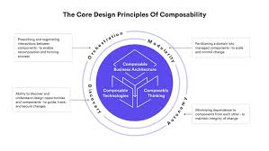

In software architecture, “composable” refers to the design principle where software components or modules are created in a way that makes them easy to combine and assemble into larger, more complex systems. Composability is particularly valuable in complex software systems, where it promotes maintainability, extensibility, and adaptability. It also encourages the development of a rich ecosystem of reusable components and libraries, which can significantly accelerate the software development process and reduce the likelihood of errors.
Identify the logical components or modules within your software system. Break down the system into smaller, self-contained units of functionality. These can be at different levels, such as functions, classes, libraries, or services.
Define clear and well-documented interfaces for your components. These interfaces should specify how components can be used, what they require as input, and what they provide as output. Use consistent naming conventions and documentation to make the interfaces understandable.
Design components with reusability in mind. Avoid building one-off solutions for specific tasks when you can create more general-purpose components that can be used in various contexts.
Manage dependencies between components carefully. Minimize dependencies between components to reduce coupling and enhance composability. Use dependency injection or inversion of control where applicable.
Standardize data formats and communication protocols between components. This ensures that different components can understand and interact with each other’s data.